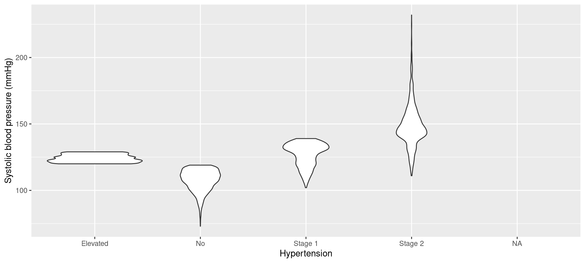
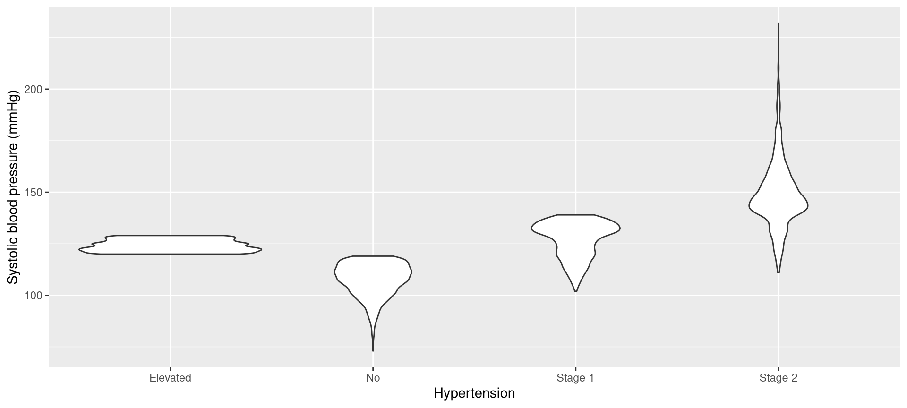
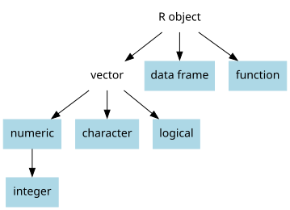
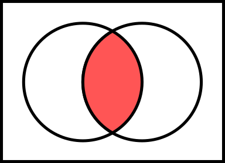
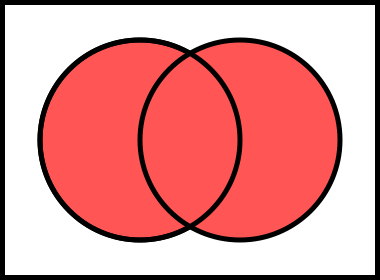
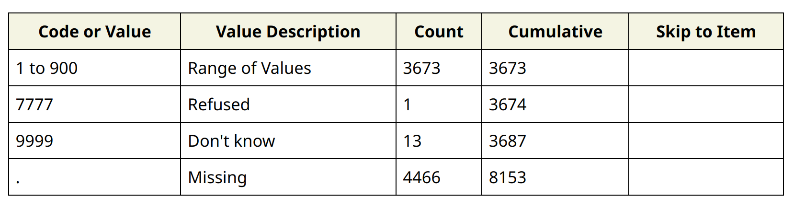

ggplot(nhanes,aes(x=hypertension,y=bpxosy1))+
geom_violin()+
labs(x='Hypertension',y='Systolic blood pressure (mmHg)')A Slower Introduction to R
UCSF Library
Thursday, November 13, 2025
Create a violin plot of systolic blood pressure (
bpxosy1) versus hypertension (hypertension), with systolic blood pressure on the y axis. You can replacegeom_boxplot()above withgeom_violin(). Add labels to the axes usinglabs(). Run your code.

Note
Synonyms of restricting include subsetting and filtering.
minidata if you want to work through these examples later:minidata
#| seqn ridageyr bpxosy1 bpxodi1 hypertension
#| 1 130378 43 135 98 Stage 2
#| 2 130379 66 121 84 Stage 1
#| 3 130380 44 111 79 No
#| 4 130384 43 NA NA <NA>
#| 5 130385 65 NA NA <NA>
#| 6 130386 34 110 72 No
#| 7 130387 68 143 76 Stage 2
#| 8 130388 27 130 95 Stage 2
#| 9 130389 59 145 76 Stage 2
#| 10 130390 31 113 78 Nosubset() and is.na():subset(minidata,!is.na(hypertension))
#| seqn ridageyr bpxosy1 bpxodi1 hypertension
#| 1 130378 43 135 98 Stage 2
#| 2 130379 66 121 84 Stage 1
#| 3 130380 44 111 79 No
#| 6 130386 34 110 72 No
#| 7 130387 68 143 76 Stage 2
#| 8 130388 27 130 95 Stage 2
#| 9 130389 59 145 76 Stage 2
#| 10 130390 31 113 78 Nois.na()hypertension are:is.na() shows whether the values are missing:subset()subset() here:
minidata: the data I want to subset!is.na(hypertension): a rule defining how I want to subsetsubset() will keep rows that are TRUE in the second argumentsubset()subset(), it is understood that any variable in the second argument is about the data in the first argument
At the top of a new script, include code for loading the ggplot2 package and importing the data. Run your code.
Using ggplot2, create density plots of systolic blood pressure (bpxosy1), with faceting by asthma (defining the rows). In ggplot(), define data to be a subset of the NHANES data that only includes individuals who are non-missing for asthma.
subset() and a numerical comparison:subset() here:
minidata: the data I want to subsetridageyr>=60: the rule defining how I want to subset== for equal!= for not equal> for greater than>= for greater than or equal to< for less than<= for less than or equal tosubset() and numerical comparisons
! at the beginning& = and| = or

TRUE values are treated as 1 and FALSE values are treated as 0Copy and paste the following code for defining ex2. Run that code.
Use subset() to get the subset of ex2 individuals who are between 40 and 49 years of age (ridageyr), inclusive of both endpoints.
Use subset() to get the subset of ex2 individuals who have a fasting glucose level (lbxglu) greater or equal to 100 mg/dL and an HDL cholesterol level (lbdhdd) greater or equal to 50 mg/dL.
Count the number of ex2 individuals who were born in the US (a dmbdorn4 value equal to 1) and have a high-school degree (a dmdedu2 value equal to 3).
Count the number of ex2 individuals who are 50 years of age (ridageyr) or older and have a fasting glucose level (lbxglu) greater or equal to 100 mg/dL.
Many of the functions for hypothesis testing support a data argument. This argument allows you to omit dollar-sign notation. So, these two examples are equivalent:
Modify the data argument in the second example to examine the relationship between systolic blood pressure and asthma among individuals with a history of smoking (a value of smoking equal to History of smoking). Remember to omit dollar-sign notation.
data argument, fit a simple linear regression model for the relationship between systolic blood pressure (bpxosy1) and diastolic blood pressure (bpxodi1), with systolic blood pressure as the y variable, restricting to individuals with a history of smoking. Remember to omit dollar-sign notation.new is an arbitrary name for the new variableminidata
#| seqn ridageyr bpxosy1 bpxodi1 hypertension new
#| 1 130378 43 135 98 Stage 2 1
#| 2 130379 66 121 84 Stage 1 1
#| 3 130380 44 111 79 No 1
#| 4 130384 43 NA NA <NA> 1
#| 5 130385 65 NA NA <NA> 1
#| 6 130386 34 110 72 No 1
#| 7 130387 68 143 76 Stage 2 1
#| 8 130388 27 130 95 Stage 2 1
#| 9 130389 59 145 76 Stage 2 1
#| 10 130390 31 113 78 No 1pad820 variable records answers to the question:About how long {do you/does SP} do these vigorous leisure-time physical activities each time?
table(nhanes$pad820,useNA='always')
#|
#| 1 2 3 4 5 6 7 8 10 12 15 20 25 30 32 35
#| 12 3 6 2 36 2 1 2 108 5 190 212 30 909 1 12
#| 40 45 46 50 55 60 70 75 90 100 105 120 150 180 240 300
#| 70 262 1 19 3 1064 5 13 145 2 3 364 4 93 49 21
#| 360 420 480 540 600 660 900 7777 9999 <NA>
#| 10 1 8 1 1 1 2 1 13 4466
7777 and 9999 are not actual minutes of vigorous physical activity7777 and 9999 to be NAreplace() function:replace() here:
nhanes$pad820: the variable that we want to modifynhanes$pad820==7777|nhanes$pad820==9999: a rule (specifically, a logical object) that indicates which values should be replacedNA: the replacement valueltpa_vigorousTip
When cleaning variables, define new variables, rather than replacing existing variables.
table():table(nhanes$ltpa_vigorous,useNA='always')
#|
#| 1 2 3 4 5 6 7 8 10 12 15 20 25 30 32 35
#| 12 3 6 2 36 2 1 2 108 5 190 212 30 909 1 12
#| 40 45 46 50 55 60 70 75 90 100 105 120 150 180 240 300
#| 70 262 1 19 3 1064 5 13 145 2 3 364 4 93 49 21
#| 360 420 480 540 600 660 900 <NA>
#| 10 1 8 1 1 1 2 4480Tip
Always check your work after doing any data cleaning.
pad800 stores minutes of moderate physical activity. Values of 7777 indicate “refused” while values of 9999 indicate “don’t know” (the codebook is available here). Use object assignment and replace() to define a new variable for moderate physical activity, with values of 7777 and 9999 replaced with NA. Check your work.alq130 stores responses to the question, “During the past 12 months, on those days that you drank alcoholic beverages, on average, how many drinks did you have?” Values of 777 indicate “refused” while values of 999 indicate “don’t know.” Use object assignment and replace() to define a new alcohol-use variable, with values of 777 and 999 replaced with NA. Check your work.Install the baseverse package, which we will discuss next week:
Install the dplyr package, which we will discuss next week: